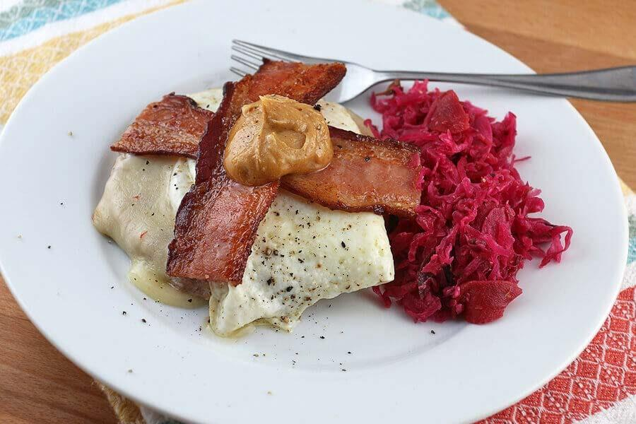
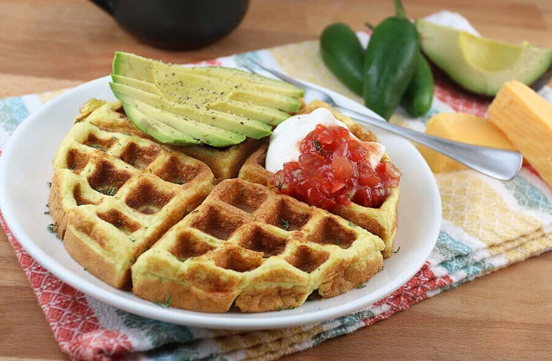
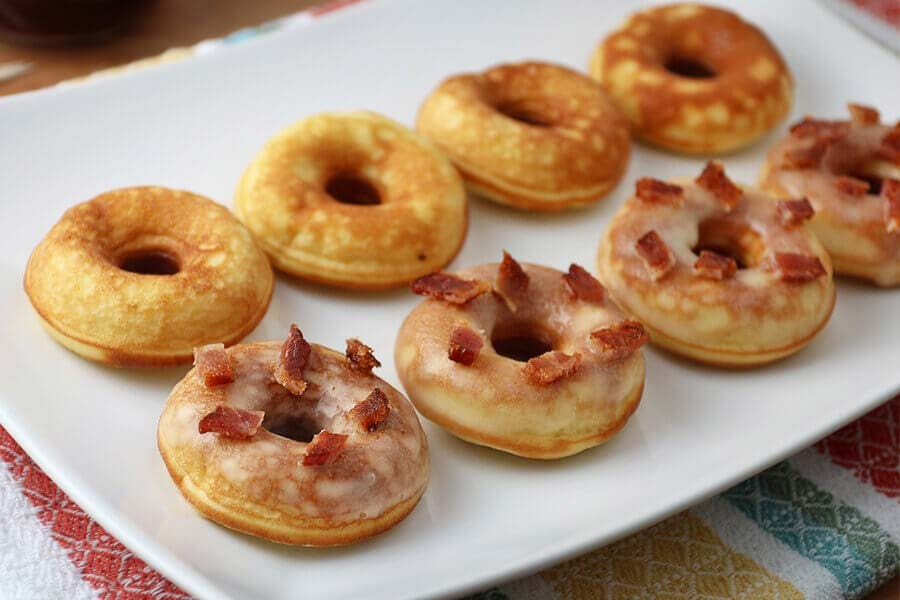

What is a Keto diet
The ketogenic, or keto, diet is a popular nutrition plan that focuses on reducing the carbohydrates you eat to 5-10% of trusted Source of your total energy intake.
So if you're following a 2,000-calorie diet, this typically means only between 20-50 grams (g) of carbs per day. This can make meal planning difficult for some people.
The keto diet is a very low carb diet that’s high in fat and moderate in protein. It’s similar to other grain-free and low carb diets, like paleo and Atkins.
It typically focuses on eating: meat, dairy, fish , eggs, nuts, non-starchy vegitables ...
In this article, we share our 10 favorite keto diet recipes, including taco substitutes, salads, and rice dishes.
Breakfast Kito Recipes
Whether you’re looking to try the keto diet for the first time or add new dishes to your routine, these recipes have you covered.
1) KETO BREAKFAST BURGER

This makes 2 servings of the Keto Breakfast Burger.
Each serving comes out to be 655 Calories, 56g Fats,
3g Net Carbs, and 30.5g Protein.
Ingredients
- 4 oz. Sausage (2 oz. per serving)
- 2 oz. Pepperjack Cheese
- 4 slices Bacon
- 2 large Eggs
- 1 tbsp. Butter
- 1 tbsp. PB Fit Powder
- Salt and Pepper to Taste
Recipe
- Start by cooking the bacon. Lay the strips (however many
you want) on a wire rack over a cookie sheet. Bake at 400F
for 20-25 minutes or until crisp.
- Mix together butter and PB Fit powder in a small container
to re-hydrate. Set aside.
- Form the sausage patties and cook them in a pan over
medium-high heat.
- Flip when the bottom side is browned. Grate the cheese
and have it ready.
- Once the other side of the sausage patty is browned, add
cheese and cover with a cloche or lid.
- Remove sausage patties with melted cheese and set aside.
Fry an egg over easy in the same pan.
- Assemble everything together: sausage patty, egg, bacon,
and re hydrated
- enjoy your breakfast
2) JALAPENO CHEDDAR WAFFLES

This makes a total of 2 Jalapeno Cheddar Waffles.
Each waffle comes out to be 338 Calories, 28g Fats, 3g
Net Carbs, and 16g Protein.
Ingredients
- 3 OZ. Cream Cheese
- 3 large Eggs
- 1 tbsp. Coconut Flour
- 1 tsp. Psyllium Husk Powder
- 1 tsp. Baking Powder
- 1 oz. Cheddar Cheese
- 1 small Jalapeno
- Salt and Pepper to Taste
Recipe
- Mix together all ingredients except for the cheese and
jalapeno using an immersion blender.
- Once the ingredients are mixed well and smooth, add
cheese and jalapeno.
- Use an immersion blender again to make sure that all of
the ingredients are mixed together well.
- Heat your waffle iron, then pour on the waffle mix. It took
about 5-6 minutes in total to cook for me.
- Top with your favorite toppings, and serve!
3) MINI KETO PANCAKE DONUTS

This makes a total of 22 Mini Keto Pancake Donuts.
Each donut comes out to be 32 Calories, 2.7g Fats, 0.4g Net
Carbs, and 1.4g Protein.
Ingredients
- 3 OZ. Cream Cheese
- 3 large Eggs
- 4 tbsp. Almond Flour
- 1 tbsp. Coconut Flour
- 1 tsp. Baking Powder
- 1 tsp. Vanilla Extract
- 4 tbsp. Erythritol
- 10 drops Liquid Stevia
Recipe
- Stick all of the ingredients inside of a container and mix
together using an immersion blender.
- Make sure that you continue to mix everything for about
45-60 seconds ensuring a smooth batter that’s slightly
thickened.
- Heat donut maker up and spray with coconut oil to ensure
non-stick properties. Pour batter into each well of the donut
maker, filling about 90% of the way.
- Let cook for 3 minutes on one side, then flip and cook for
an additional 2 minutes.
- Remove donuts from the donut maker and set aside to
cool. Repeat process with the rest of the batter.
4) BACON CHEDDAR CHIVE OMELET
This makes 1 serving of Bacon Cheddar Chive Omelet.
The macros come out to be 463 Calories, 39g Fats, 1g Net
Carbs, and 24g Protein.
Ingredients
- 2 slices Bacon, already cooked
- 1 tsp. Bacon Fat
- 2 large Eggs
- 1 oz. Cheddar Cheese
- 2 stalks Chives
- Salt and Pepper to Taste
Recipe
- Make sure that you have all of your ingredients ready to go
as the omelet will cook quickly. Shred the cheese, pre-cook
the bacon, and have the chives chopped (or use herb scissors
if you’re lazy like me).
- Heat a pan with bacon fat in it to medium-low heat. You
want it emitting a decent amount of heat when you hover
your hand above the pan. Add the eggs, and season with
chives, salt, and pepper.
- Once the edges are starting to set, add your bacon to the
center and let cook for 20-30 seconds longer. Then, turn the
heat off on the stove.
- Add the cheese on top of the bacon, making sure it’s
centered. Then, take two edges of the omelet and fold them
onto the cheese. Hold the edges there for a moment as the
cheese has to partially melt to act as a “glue” to hold them in
place.
- Do the same with the other edges, creating a burrito of
sorts, then flip over and let cook in the now warm pan for a
little longer.
- Serve with a bit of extra cheese, bacon, and chives on top
if you’d like – but by itself it’s just plain delicious.
5) JALAPENO POPPER EGG CUPS
This makes a total of 12 Jalapeno Popper Egg Cups.
Each Egg Cup comes out to be 216 Calories, 19.3g Fats, 0.9g
Net Carbs, and 9.6g Protein.
Ingredients
- 12 strips Bacon
- 8 large Eggs
- 4 oz. Cheddar Cheese
- 3 oz. Cream Cheese
- 4 medium Jalapeno Peppers, de-seeded and chopped
- 1/2 tsp. Garlic Powder
- 1/2 tsp. Onion Powder
- Salt and Pepper to Taste
Recipe
- Get all ingredients ready. Measure out all cheese and grate
as needed. Prep the jalapenos by seeding and chopping
them. Save 1 jalapeno that you can cut into rings as a
garnish for the top. Preheat oven to 375F.
- Par-cook bacon so it’s semi crisp but still pliable. Save
bacon grease in the pan.
- Using a hand mixer, mix together eggs, cream cheese,
chopped and seeded jalapeno peppers, leftover bacon
grease, garlic powder, onion powder, and salt and pepper to
taste.
- Grease wells of muffin tin, then place par-cooked bacon
around the edges.
- Pour egg mixture into the wells of the muffin tin. Make sure
you only go about half-way to 2/3 way up as they rise quite a
lot. Oh! This is the reason you only see 4 muffins in the
following pictures – I overfilled the first batch of 12 and they
turned into Frankenstein muffins.
- Add cheddar cheese on the top of the muffin, then a
jalapeno. Cook at 375F for 20-25 minutes.
- Once cooked, remove from the oven to let cool. They will
slowly deflate and give you a great treat.
Summery
Keep your keto meals simple so that you can make them daily, remember it's all about consistency. Sign up to the email list below if you want to get a weekly recipe for breakfast, lunch, dinner and snacks. I will send you all the best keto recipes that make your life easier. And it's all for free.